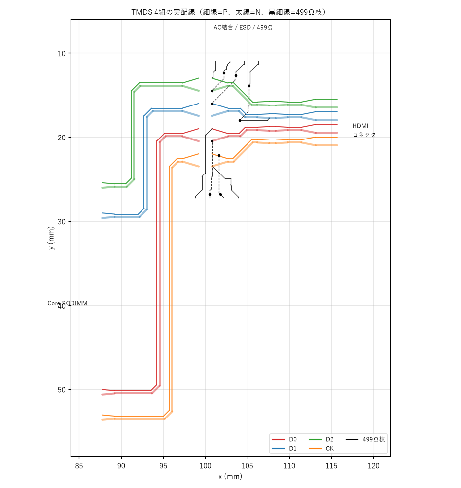
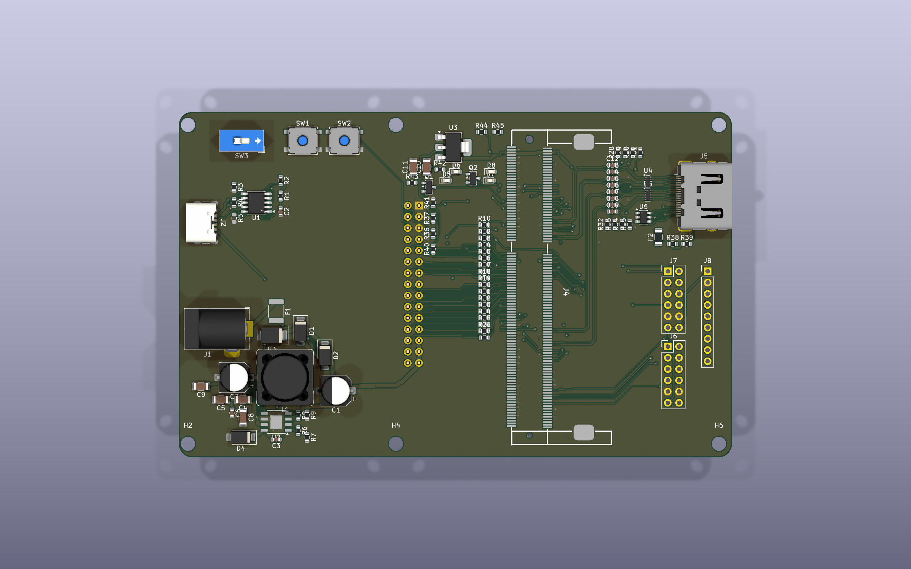
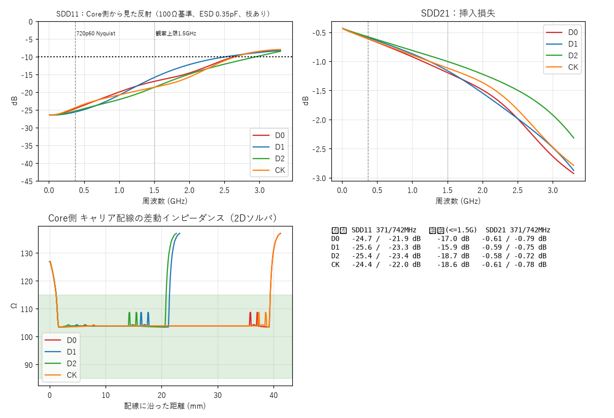
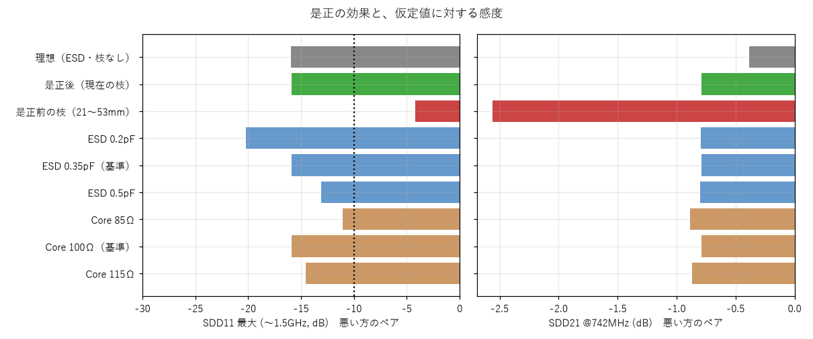

結論
1. 監査指摘と是正の状況
| # | 指摘 | 是正 | 確認結果 |
|---|---|---|---|
| A | TMDS用ESD（C293965、DOWO製）の入力・出力が内部でつながる保証がない | ESDの入力側ピン（1/2/4/5）と出力側ピン（10/9/7/6）を、基板上の銅の細線で接続し、線路は常に連続した銅配線にした。ESDは分岐（タップ）。内部導通があっても無くても成立する | 銅だけで Core のパッド → コネクタのパッドに到達（check_continuity.py）：全8線で連続。P/Nの上下順（Core側とコネクタ側）：下表 |
| B | 499Ω抵抗の枝が長い（21〜53mm、CKNは53.5mm） | 抵抗の位置を固定し、枝をTMDSの直後・サイドバンド線より先に配線。枝は解析から除外せず、実長で終端付き線路としてモデル化 | 枝 2.2〜11.5mm（以前21〜53mm）。D1のN側が11.5mmで目標（数mm以下）未達。P/Nの長さは非対称（モード変換は未評価） |
| C | 目標速度：1080p60はGW2Aのシリアライザ上限を超える | 目標を720p60に限定（記録・ページを訂正済み） | 観察帯域は〜1.5GHz（720pのNyquist 371MHz、742Mbps） |
| D | 解析コード・記録の精度（区間の並び順、間隔の丸め、枝のメタデータ欠落、ESD容量、層のモデル化） | 区間を配線の接続順にたどる方式／間隔0.13mmを補間して直接使用／枝と主経路をルータが直接出力（tmds_roles.json）／ESD容量は0.2〜0.5pFを感度範囲に／全層を同じマイクロストリップ表で近似（仮定として明記） | 下記の各節 |
| ペア | P/Nの上下順がCore側とコネクタ側で一致 |
|---|---|
| D2 | 一致 |
| D1 | 一致 |
| D0 | 一致 |
| CK | 一致 |
D2はTX5のP/Nを物理的に入れ替えて接続しています。FPGA側で、TMDSエンコード後・差動バッファ前の全シリアルビットを反転して補償してください（RGB値の反転とは異なります。クロックでは使えません）。
2. 範囲と基準
| 区間 | 扱い | 理由 |
|---|---|---|
| キャリア基板 | 実形状から解析（主対象） | 自分たちの設計物 |
| Core基板内 | 理想100Ω線路（38.4mm）。85〜115Ωを感度解析 | 配線データは未取得（公開を確認できず）。公式配線長表のみ。長さ一致は100Ωの証明にならない。TX4はN側が1.9mm短いため不使用 |
| SODIMM接点 | 集中定数の感度解析 | 公式に電気特性データなし |
| HDMIコネクタ | 100Ω・11mmの理想線路 | 実形状モデルなし |
| ケーブル・シンク | 対象外 | HDMIの測定はコネクタ端子で行う規定 |
| 項目 | 基準 | 根拠 |
|---|---|---|
| 差動インピーダンス | 100Ω ±15%（85〜115Ω） | HDMI 1.4 のTMDS線路の一般的な要求 |
| ペア内スキュー | 5mm未満（自主目標）。参考：720p60の0.15×Tbit ≒ 200ps | TI SLLA414A §2.3：ペア内0.15×Tbit、ペア間0.20×Tcharacter。5mmは保守的な自主値 |
| SDD11（反射） | −10dB以下（〜1.5GHz） | 自主目標（規格値ではない） |
| SDD21（挿入損失） | 1dB程度以内（742MHz） | 自主目標 |
| 対象速度 | 720p60（0.74Gbps/レーン）。1080p60は保証対象外 | GW2Aのシリアライザ上限1200Mbps（DS102 Table 3-17）を超える |
3. 手法とツール
| 層 | 手法 | 実装 | 状態 |
|---|---|---|---|
| (a) 解析式 | IPC-2141／Hammerstad式 | 手計算 | 検証の基準値 |
| (b) 2D準静的 | 有限差分でラプラス方程式を解き、容量行列から Z0／偶奇モード／εeff | microstrip2d.py（自作） | 主力 |
| (c) チャネル推定 | 配線を0.1mm刻みの区間に分け、局所の差動インピーダンスでABCD行列をカスケード。ESDは分岐点の並列容量、499Ωは終端付き線路の枝として実長・実位置で挿入。損失は tanδ 0.02 と表皮効果 | tmds_channel.py, tmds_sparam.py | 主力 |
| (d) 銅の連続性チェック | KiCadの接続グラフで、銅（配線・ビア・パッド）だけを通って到達できるかを確認 | check_continuity.py | 新規 |
| (e) 3D電磁界 | FDTD（openEMS 0.37.0） | openems_*.py | 較正中（8章） |
スタックアップ（想定）
JLCPCB 4層 JLC04161H-7628（1.6mm）：L1 銅35µm／プリプレグ 0.2104mm（εr 4.4）／L2／コア 1.065mm／L3／プリプレグ 0.2104mm／L4。ソルダマスクは無視。発注時にこの積層（インピーダンス管理）を指定する必要があります。
モデルの前提・簡略化
- 差動モードのみ（コモン⇔差動のモード変換は評価しない。P/Nの枝の長さが違う分は未評価）。
- 全ての銅層を、F.Cuのマイクロストリップの表で近似（仮定。In2.Cu・B.Cuは実際の帰路が異なる）。ビアの寄生は未考慮。
- AC結合キャップは ESL 1.4nH（差動）。ESDは信号線への分岐の並列容量として、差動0.2〜0.5pF（基準0.35pF）を仮定の感度範囲で使用（DOWO資料：I/O−GND 0.4〜0.5pF、I/O−I/O 0.2〜0.3pF）。
- 499Ωの枝：0.127mm幅（単線約85Ω）の線路＋499Ω終端。P/Nの枝は、線路対地の直列合成（Y_P·Y_N/(Y_P+Y_N)）で差動の並列負荷にした。
4. 2Dソルバの検証
| ケース | 2Dソルバ | 解析式 | 参考 |
|---|---|---|---|
| 単線 w=0.35mm | 51.7Ω | IPC式 約50.0Ω | JLCPCB公表 50Ω用（0.35mm前後）と一致 |
| 単線 w=0.20mm | 66.2Ω | IPC式 67.2Ω | — |
| 差動 w=0.20／間隔0.13mm | 約103〜104Ω | IPC-2141差動式 約98.7Ω | 式は概算（±10%程度）。以前の107Ωは0.15mmの値の代用だった（訂正済み） |
単線は±3%で一致。2Dソルバと概算式の一致をもって、保証できる誤差とは言いません。差動値は約±8%の不確かさを見込みます。

5. 配線の結果（是正後）
P/Nを1本の太い線として引いて2本に分けるペア配線です。Core側は入れ子の縦レーン、キャップ→ESD→コネクタは直線レーン。ESDの足は銅の細線でつないであり、線路は連続した銅配線です。

| ペア | P/N長 (mm) | スキュー | Zdiff 最小/平均 (Ω) | 499Ω枝 P/N | F.Cu結合割合 |
|---|---|---|---|---|---|
| D0 | 56.61 / 56.61 | 0.00 mm | 103 / 110 | 9.1 / 6.8 mm | 88 % |
| D1 | 38.61 / 38.61 | 0.00 mm | 103 / 113 | 6.6 / 11.5 mm | 83 % |
| D2 | 38.64 / 38.64 | -0.00 mm | 103 / 113 | 2.2 / 4.4 mm | 83 % |
| CK | 57.24 / 57.24 | 0.00 mm | 103 / 110 | 5.2 / 5.4 mm | 88 % |


6. チャネル推定（Sパラメータ）
Core基板内（理想100Ω・38.4mm）、キャリア基板の実配線、AC結合キャップ、ESD（0.35pF）、499Ω枝、コネクタ（100Ω・11mm）をカスケードしました（差動モード、基準100Ω）。観察帯域は720p60に合わせ、〜1.5GHzまでを見ています。
| ペア | SDD11 371/742MHz | SDD11 最大(〜1.5GHz) | SDD21 371/742MHz | SDD21 1.5GHz |
|---|---|---|---|---|
| D0 | -24.7 / -21.9 dB | -17.0 dB | -0.61 / -0.79 dB | -1.19 dB |
| D1 | -25.6 / -23.3 dB | -15.9 dB | -0.59 / -0.75 dB | -1.16 dB |
| D2 | -25.4 / -23.4 dB | -18.7 dB | -0.58 / -0.72 dB | -1.00 dB |
| CK | -24.4 / -22.0 dB | -18.6 dB | -0.61 / -0.78 dB | -1.11 dB |

499Ωの対地抵抗だけで、差動998Ωの並列負荷になり、SDD21が約−0.4dB下がります（理想の系との差）。「直流のみで影響しない」という以前の扱いは誤りでした。
7. 是正の効果と、仮定値に対する感度
| 条件（4組のうち悪い方） | SDD11 最大(〜1.5GHz) | SDD21 @742MHz |
|---|---|---|
| 理想（ESD・枝なし） | -15.9 dB | -0.38 dB |
| 是正後（現在の枝） | -15.9 dB | -0.79 dB |
| 是正前の枝（21〜53mm） | -4.2 dB | -2.56 dB |
| ESD 0.2pF | -20.2 dB | -0.79 dB |
| ESD 0.35pF（基準） | -15.9 dB | -0.79 dB |
| ESD 0.5pF | -13.1 dB | -0.80 dB |
| Core 85Ω | -11.1 dB | -0.88 dB |
| Core 100Ω（基準） | -15.9 dB | -0.79 dB |
| Core 115Ω | -14.5 dB | -0.87 dB |

- 是正前の枝のままだと、SDD11が−4.2dB、SDD21が−2.6dBまで悪化する（是正の効果は大きい）。
- ESD容量が仮定の上限（0.5pF）、またはCoreが85Ωだと、−10dBの自主目標に近づく（−13.1dB／−11.1dB）。Coreの実インピーダンスは不明。
SODIMM接点の寄生

8. 3D電磁界解析（openEMS）の状況
openEMS 0.37.0（公式配布のWindows版、専用の環境）を導入しましたが、較正が済んでいないため結論には使っていません。
| ケース | openEMS | 2D／解析式 | 差 |
|---|---|---|---|
| 単線 w=0.35mm、メッシュ0.1mm | 47.7Ω | 51.7／50.0Ω | −8% |
| 単線 w=0.35mm、メッシュ0.05mm | 47.9Ω | 同上 | −8%（収束済み） |
| 差動 w=0.2／間隔0.13mm、メッシュ0.1mm | 75.3Ω | 約104／98.7Ω | −22〜24% |
3D側の設定（ポート定義、境界条件、基準面、抽出式）に系統的な誤りがある可能性が高く、2D値に合うまで調整することは検証ではありません。解決の手順は、既知例での再現確認、導波管ポートへの変更、PML境界、抽出方法の見直しです。
9. 限界と残課題
| 事項 | 状況・対応 |
|---|---|
| 499Ω枝の短縮（D1のN側 11.5mm ほか） | 数mm以下の目標は未達。P/Nの枝長が非対称。次版で抵抗の配置を見直す。それまでは終端付き線路として評価に含める |
| ESDの実フットプリント | DOWO DFN2510-10L（端子は0.2×0.38mm）。KiCad標準のUSON-10パッドで代用しており、製作前にメーカーの推奨ランドパターンと照合する |
| Core基板内・SODIMM接点の実特性 | 感度解析で範囲を提示。公式Dock（同じCore・同じ構成）との比較測定が有効 |
| 内層・ビア・モード変換 | 3D解析の較正後に確認 |
| 積層指定 | JLC04161H-7628（インピーダンス管理）を発注時に指定 |
| 製作後の最低限の成功条件（PoC） | 短いケーブル・限定モニタで、640×480→720p60の固定パターンを30分程度表示（点滅・色化け・同期抜けなし）。720pが不安定なら「低速PoC成功・720p未達」と記録。1080p60の失敗を基板不良とは判定しない |
10. 再現手順と記録
- 方針・前提・判断の記録（監査用）：docs/シミュレーション方針と監査記録.md（§10に今回の是正と再評価）
- 調査と設計判断の経緯：docs/HDMI_信号品質_調査と方針.md
- ソース：kicad/sim/
| コマンド | 内容 |
|---|---|
kicad/gen/make_pcb.py | 配置・配線（tmds_roles.json＝主経路と枝を出力） |
check_continuity.py（KiCad python） | 銅だけでの連続性・P/N順 |
tmds_channel.py --extract、tmds_channel.py | 実配線の抽出、区間の差動インピーダンス・長さ・スキュー |
tmds_sparam.py、make_report_figs.py、make_report_page.py | Sパラメータ推定、図、このページ |
使用環境：KiCad 10.0.6、Python 3.12（numpy 2.5.3、scipy 1.18.1、matplotlib 3.11.2）、openEMS 0.37.0（専用のPython 3.13環境）。
訂正記録
- 2026-10-24（再提出）：監査指摘A・Bを是正。ESDを銅配線の分岐に変更、499Ω枝を短縮して解析に含めた。チャネル推定は枝・ESD容量の範囲・Core側の感度を含む形に更新。以前の「合格（推定）」の表現は取り下げた。
- 2026-10-24：結合区間の差動インピーダンスを107Ω→103〜104Ωに訂正（間隔0.13mmの補間）。区間の並びを信号経路順に修正。